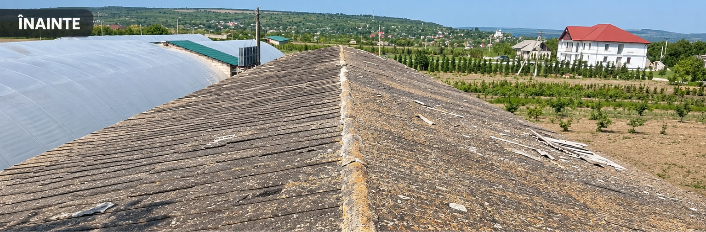

Cât Durează un Acoperiș Metalic?
📅 20 Iunie 2026 | ⏱️ 6 minute | 📍 Chișinău, Bălți, Cahul | ✍️ Valmex.md
Este una dintre primele întrebări pe care le pun clienții noștri: „Cât o să-mi țină acoperișul?" Răspunsul corect depinde de calitatea materialului, de montaj și de întreținerea ulterioară. În acest articol îți explicăm exact ce influențează durata de viață a unui acoperiș metalic, cu exemple reale din proiectele Valmex.md.
Durata de Viață Reală a Țiglei Metalice
Un acoperiș din țiglă metalică montat profesional, cu materiale de calitate, poate rezista între 30 și 50 de ani. Această longevitate depinde direct de trei factori principali: grosimea oțelului, stratul de protecție (poliester, mat, sau straturi premium) și — cel mai important — calitatea montajului.
La Valmex.md oferim garanție extinsă de 15 ani pentru țigla metalică montată, dar materialul în sine, îngrijit corespunzător, rezistă considerabil mai mult.


Proiect real Valmex — Acoperiș Negureni. Trage cursorul pentru a vedea transformarea completă.
Ce Influențează Durata Acoperișului?
1. Calitatea Materialului
Grosimea oțelului (ideal 0,45–0,50 mm) și tipul stratului de protecție (poliester, mat sau premium) determină direct rezistența la coroziune, UV și variații de temperatură.
2. Calitatea Montajului
Un montaj greșit — șuruburi insuficiente, lipsa foliei anticondens, pante incorecte — poate reduce drastic durata de viață, indiferent cât de bun e materialul. De aceea alegerea unei echipe cu experiență verificabilă este la fel de importantă ca alegerea țiglei.
3. Clima din Moldova
Variațiile mari de temperatură (de la -25°C iarna la +40°C vara), ninsorile abundente și grindina necesită un acoperiș conceput pentru condiții dure. Țigla metalică de calitate rezistă bine acestor condiții, cu o întreținere minimă.
4. Întreținerea Periodică
Curățarea jgheaburilor de frunze, verificarea periodică a șuruburilor și îndepărtarea zăpezii abundente de pe pante line pot prelungi semnificativ viața acoperișului.
⚠️ Atenție!
Un acoperiș montat de o echipă fără experiență poate arăta bine inițial, dar poate cauza probleme majore (infiltrații, coroziune prematură) în doar câțiva ani. Verifică mereu portofoliul firmei înainte de a semna o comandă.
Cum Prelungești Durata Acoperișului
- Alege o echipă cu garanție scrisă — nu doar promisiuni verbale
- Verifică anual starea șuruburilor și a jgheaburilor — mai ales după ierni grele
- Nu neglija folia anticondens — previne coroziunea din interior
- Elimină rapid eventualele deteriorări mecanice — crengi cădute, impact, etc.
Concluzie
Un acoperiș metalic bine ales și montat profesional este o investiție pe termen lung — 30 până la 50 de ani de protecție fără griji majore. Diferența dintre un acoperiș care ține 15 ani și unul care ține 40 de ani nu e neapărat prețul materialului, ci calitatea montajului. Echipa Valmex.md oferă consultație gratuită, materiale verificate și garanție extinsă de 15 ani pentru fiecare proiect.
🏠 Vrei un Acoperiș care Ține Decenii?
Echipa Valmex.md oferă consultație gratuită, materiale premium și garanție extinsă de 15 ani pentru montajul acoperișului tău în toată Republica Moldova.
📞 Sună Acum: +373 78 026 212Sau trimite cerere online — răspundem în 30 de minute